2026-10-28 · 同一组本地测试内容，比较原始主题与优化版本。
修复前面板只有 54px；修复后为完整抽屉，搜索与导航均可操作。
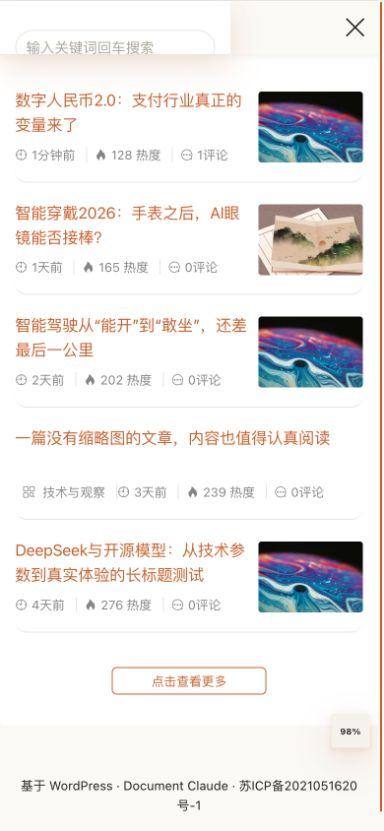
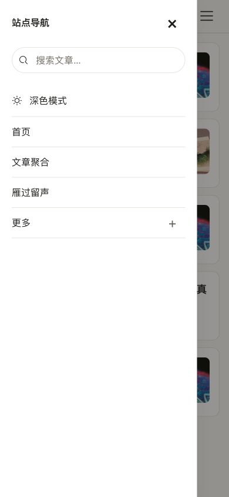
标题、缩略图与元信息重新分配空间，无图文章自然铺满。
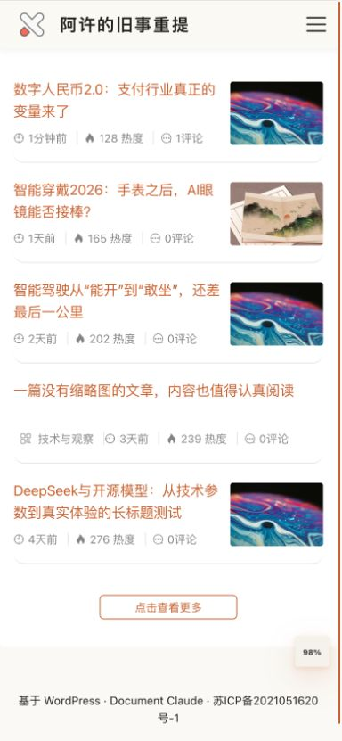
保留三栏结构，用清晰的文字层级和卡片边界呈现内容。
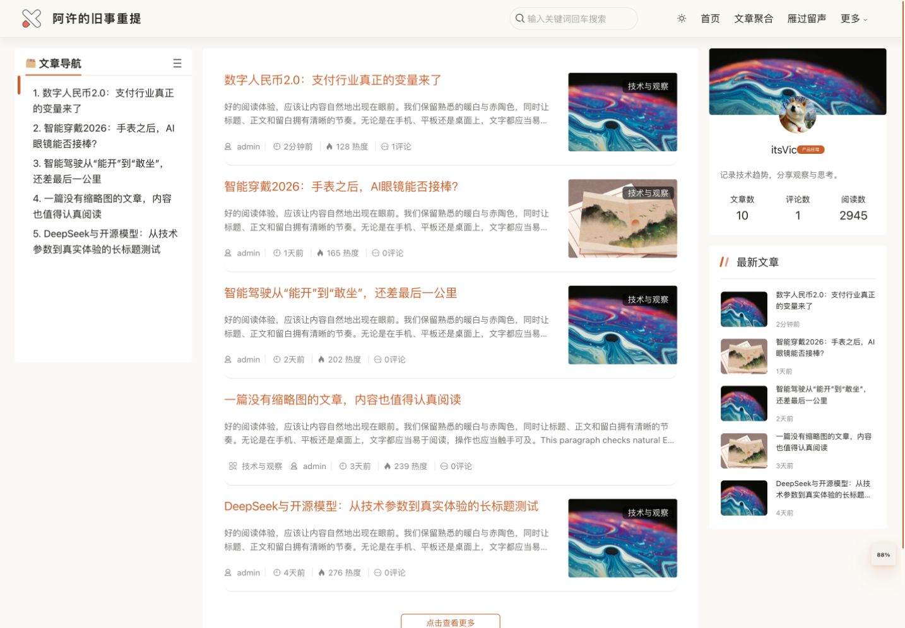
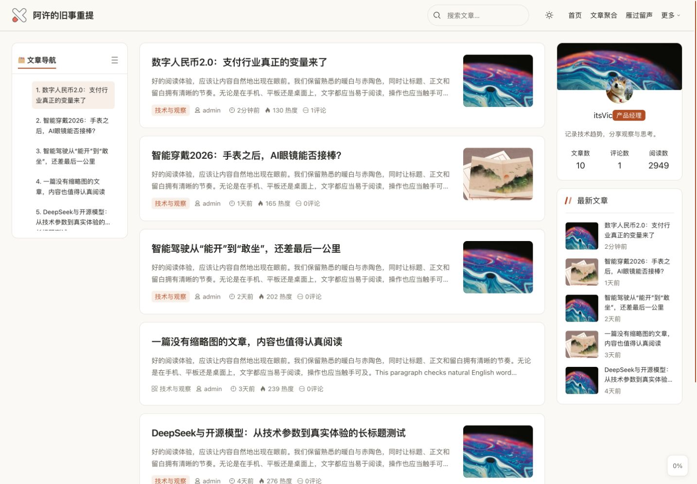
恢复图片宽度、正文节奏，并提供遵循原开关的折叠目录。
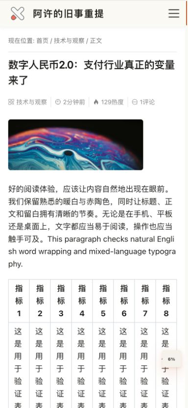
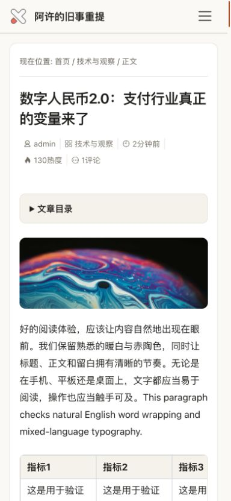
日期与标题上下分组，标题允许两行，减少截断。
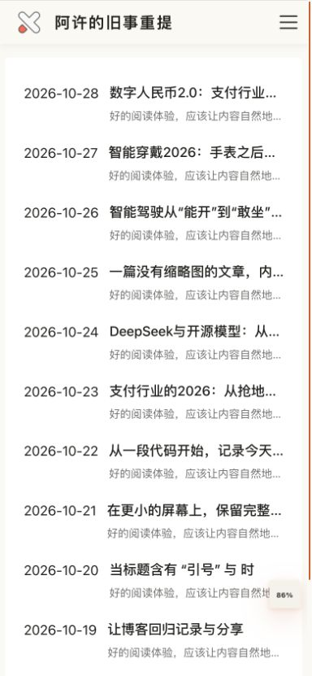
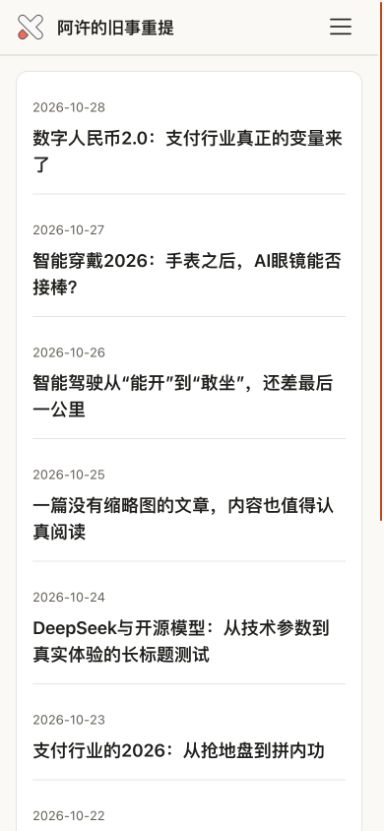
字段单列、标签清晰，输入字号与触控尺寸适合手机。
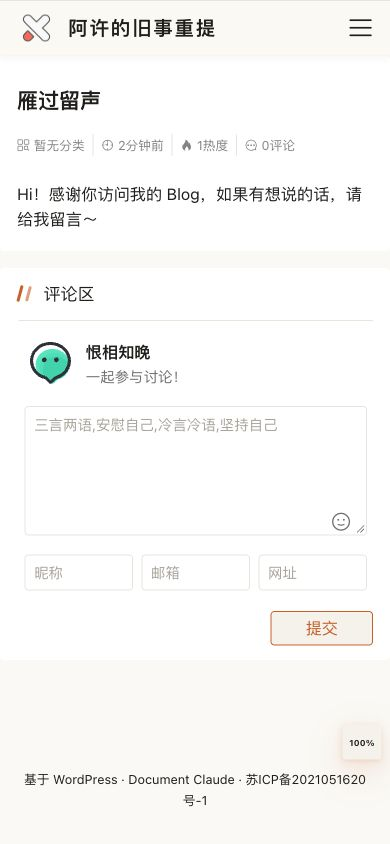
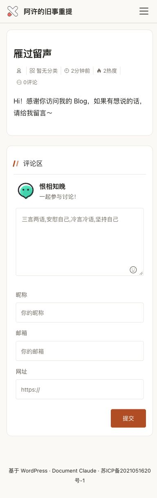
提高辅助文字、标签和交互色的辨识度，保持暖色基调。
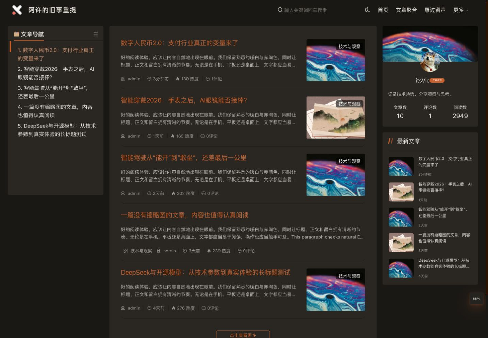
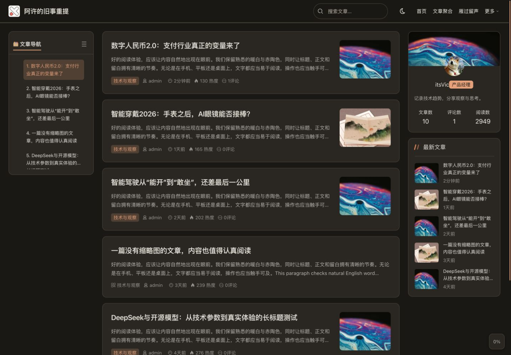
预览环境：WordPress 7.1.3 / PHP 8.3.33 / Node 24.18。截图来自本地隔离环境，示例图片与文章用于验证布局。完整验证记录 · 原始测量结果。独立 Safari 与移动真机尚未验证。